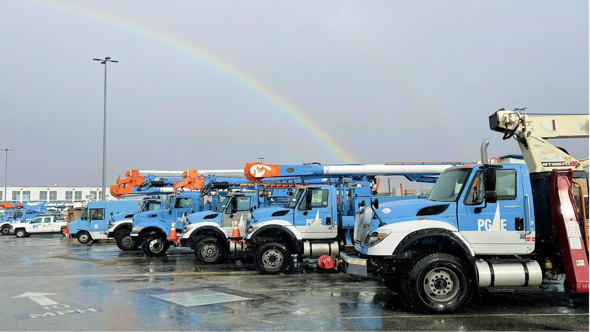

Econ 134A · Financial Management
PG&E
Valuation
Scenario
Analysis
Overview
PG&E Corporation (NYSE:PCG) is an energy holding company whose subsidiary, Pacific Gas and Electric Company, is a major utility company that provides electricity in Northern and Central California.
In this Scenario analysis, the base case values are directly from Part A, the financial model spreadsheet. The following scenarios presented show 2 bear cases, one in which PG&E is liable vs not liable for a wildfire or natural disaster event. The bull case shows the 'optimistic' scenario of expanded revenue base in the case of AI data center expansion and heightened demand.
Scroll to walk through each scenario. Select from the boxes below to go directly to a specific scenario.

PG&E is a regulated utility and operates under the California Public Utilities Commission (CPUC), which caps PG&E's rate of return at 7.8%. Following its 2019 Chapter 11 bankruptcy, the result of being to blame for the 2017 and 2018 catastrophic wildfires, the company has undertaken a $63B multi-year infrastructure campaign.
The 2017–2018 wildfires proved that PG&E was due for a major overhaul — its infrastructure was outdated and dangerous. Now, with a new CEO and majority new board members, a plan for improvement centered around sustainability, keeping rates for customers low, and improving efficiency may set PG&E on a more stable future.
The purpose of this scenario analysis is to show potential future scenarios, and the probability of them occurring, that could affect PG&E.
The 4 scenarios, including the base case, are described below. From our base case, it is evident that the intrinsic share price differs from the currently traded market price, which demonstrates that investors have a different view on top of our current assumptions that might be driving the share price higher. With our scenario analysis, we might be able to describe the discrepancy between the two prices.